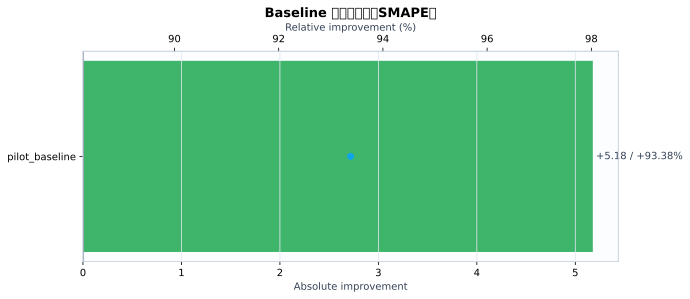
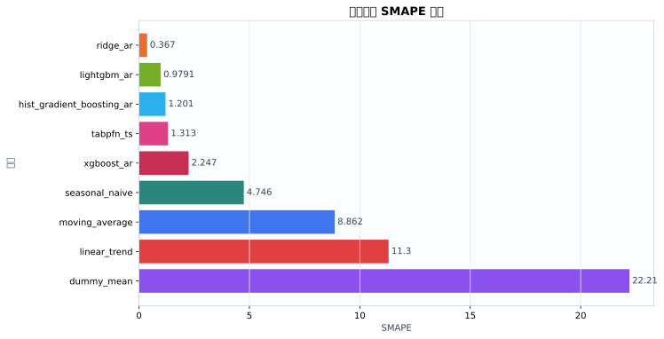
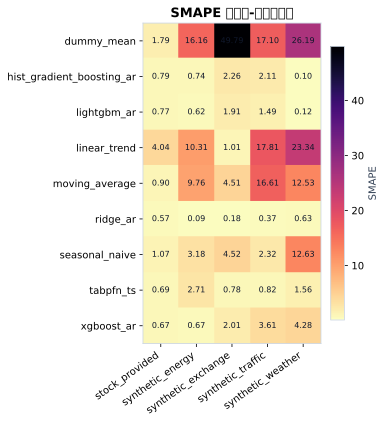
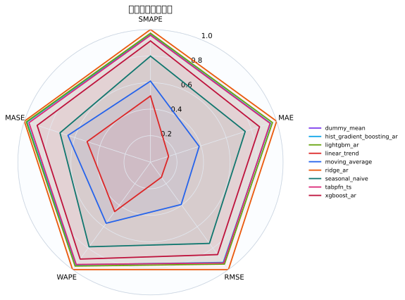
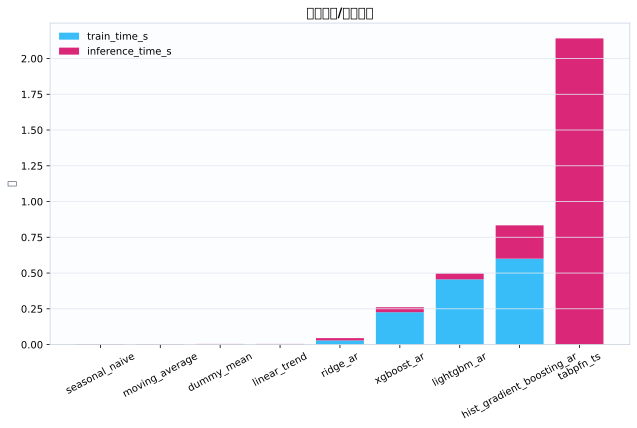
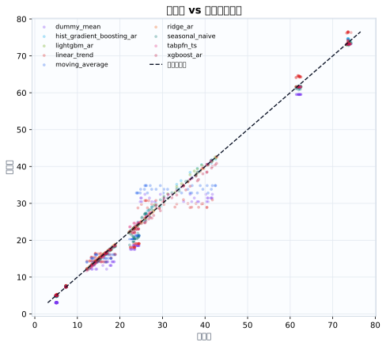
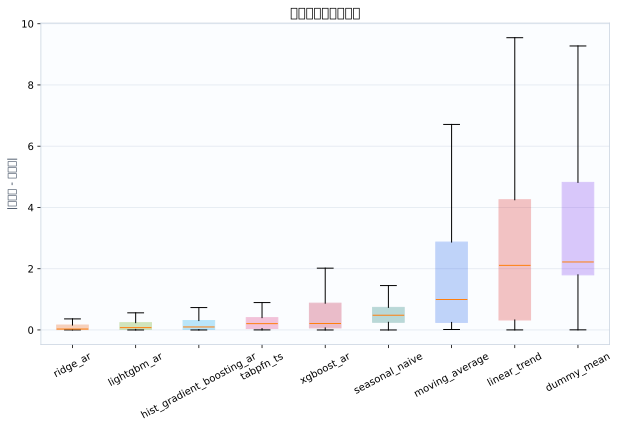

数据集5
模型9
指标行数45
预测行数3024
结论摘要
- 主指标 SMAPE 下，当前 run 的最佳模型是 ridge_ar，平均值为 0.367。
- 相对 baseline pilot_baseline，当前最佳模型在 SMAPE 上提升 93.38% （absolute=+5.178）。
核心指标卡片
SMAPE
0.367
最佳模型: ridge_ar
GPU_MEMORY_MB
0
最佳模型: dummy_mean
INFERENCE_TIME_S
0.00374
最佳模型: seasonal_naive
MAE
0.1145
最佳模型: ridge_ar
MASE
0.3192
最佳模型: ridge_ar
MSE
0.0401
最佳模型: ridge_ar
RMSE
0.146
最佳模型: ridge_ar
TRAIN_TIME_S
0
最佳模型: tabpfn_ts
Baseline 对比
| baseline | metric | current_model | current_value | baseline_model | baseline_value | absolute_difference | relative_improvement_pct |
|---|---|---|---|---|---|---|---|
| pilot_baseline | smape | ridge_ar | 0.367 | ridge_ar | 5.545 | 5.178 | 93.38 |
动态交互图表
指标排名动态图
残差直方图
效率-精度散点图
数据集排名轨迹
Matplotlib 可视化图表
Baseline 改变量图
{kind=link}

Baseline/模型平均指标柱状图
{kind=link}

数据集-模型热力图
{kind=link}

多指标雷达图
{kind=link}

运行时间图
{kind=link}

真实值-预测值散点图
{kind=link}

残差箱线图
{kind=link}

训练过程曲线
N/A：当前 run 目录未发现 loss/accuracy/TensorBoard/wandb 训练曲线文件。
错误分析与样本分析
当前支持预测任务的残差与真实-预测散点分析；分类 confusion matrix / ROC / PR 曲线需要真实分类输出后自动启用。
原始 Metrics
| run_id | model | dataset | domain | horizon | context_length | mse | mae | rmse | smape | wape | mase | train_time_s | inference_time_s | gpu_memory_mb |
|---|---|---|---|---|---|---|---|---|---|---|---|---|---|---|
| tabpfn_ts_20260528_155721 | dummy_mean | synthetic_energy | energy | 24 | 384 | 8.524 | 2.4 | 2.92 | 16.16 | 15.43 | 5.61 | 0.0005808 | 0.005041 | 0 |
| tabpfn_ts_20260528_155721 | seasonal_naive | synthetic_energy | energy | 24 | 384 | 0.2304 | 0.48 | 0.48 | 3.182 | 3.087 | 1.122 | 0.0003987 | 0.00456 | 0 |
| tabpfn_ts_20260528_155721 | moving_average | synthetic_energy | energy | 24 | 384 | 2.995 | 1.509 | 1.731 | 9.763 | 9.701 | 3.526 | 0.0003928 | 0.00462 | 0 |
| tabpfn_ts_20260528_155721 | linear_trend | synthetic_energy | energy | 24 | 384 | 3.165 | 1.592 | 1.779 | 10.31 | 10.24 | 3.722 | 0.000452 | 0.005112 | 0 |
| tabpfn_ts_20260528_155721 | ridge_ar | synthetic_energy | energy | 24 | 384 | 0.0002388 | 0.01321 | 0.01545 | 0.08902 | 0.08497 | 0.03089 | 0.02529 | 0.0208 | 0 |
| tabpfn_ts_20260528_155721 | hist_gradient_boosting_ar | synthetic_energy | energy | 24 | 384 | 0.05746 | 0.1271 | 0.2397 | 0.7407 | 0.8171 | 0.297 | 0.5458 | 0.2773 | 0 |
| tabpfn_ts_20260528_155721 | lightgbm_ar | synthetic_energy | energy | 24 | 384 | 0.04067 | 0.1063 | 0.2017 | 0.6186 | 0.6837 | 0.2485 | 0.4475 | 0.04782 | 0 |
| tabpfn_ts_20260528_155721 | xgboost_ar | synthetic_energy | energy | 24 | 384 | 0.031 | 0.1109 | 0.1761 | 0.6691 | 0.7132 | 0.2592 | 0.2433 | 0.03341 | 0 |
| tabpfn_ts_20260528_155721 | tabpfn_ts | synthetic_energy | energy | 24 | 384 | 0.169 | 0.4018 | 0.4111 | 2.711 | 2.584 | 0.9394 | 0 | 3.249 | 0 |
| tabpfn_ts_20260528_155721 | dummy_mean | synthetic_traffic | traffic | 24 | 384 | 39.85 | 5.625 | 6.313 | 17.1 | 16.89 | 4.018 | 0.0006876 | 0.003475 | 0 |
| tabpfn_ts_20260528_155721 | seasonal_naive | synthetic_traffic | traffic | 24 | 384 | 0.6827 | 0.6836 | 0.8262 | 2.321 | 2.053 | 0.4883 | 0.000312 | 0.003479 | 0 |
| tabpfn_ts_20260528_155721 | moving_average | synthetic_traffic | traffic | 24 | 384 | 36.68 | 5.467 | 6.056 | 16.61 | 16.42 | 3.905 | 0.0002903 | 0.003629 | 0 |
| tabpfn_ts_20260528_155721 | linear_trend | synthetic_traffic | traffic | 24 | 384 | 47.57 | 5.85 | 6.897 | 17.81 | 17.57 | 4.179 | 0.0002949 | 0.004057 | 0 |
| tabpfn_ts_20260528_155721 | ridge_ar | synthetic_traffic | traffic | 24 | 384 | 0.02208 | 0.1268 | 0.1486 | 0.3685 | 0.3807 | 0.09055 | 0.0182 | 0.01477 | 0 |
| tabpfn_ts_20260528_155721 | hist_gradient_boosting_ar | synthetic_traffic | traffic | 24 | 384 | 0.894 | 0.6819 | 0.9455 | 2.113 | 2.048 | 0.487 | 0.4037 | 0.2229 | 0 |
| tabpfn_ts_20260528_155721 | lightgbm_ar | synthetic_traffic | traffic | 24 | 384 | 0.5613 | 0.5013 | 0.7492 | 1.485 | 1.505 | 0.358 | 0.4115 | 0.03941 | 0 |
| tabpfn_ts_20260528_155721 | xgboost_ar | synthetic_traffic | traffic | 24 | 384 | 1.818 | 1.194 | 1.348 | 3.61 | 3.585 | 0.8528 | 0.2012 | 0.03707 | 0 |
| tabpfn_ts_20260528_155721 | tabpfn_ts | synthetic_traffic | traffic | 24 | 384 | 0.1236 | 0.2493 | 0.3516 | 0.8188 | 0.7485 | 0.1781 | 0 | 2.197 | 0 |
| tabpfn_ts_20260528_155721 | dummy_mean | synthetic_weather | weather | 24 | 384 | 29.77 | 5.439 | 5.457 | 26.19 | 23.16 | 41.72 | 0.0004015 | 0.002418 | 0 |
| tabpfn_ts_20260528_155721 | seasonal_naive | synthetic_weather | weather | 24 | 384 | 8.652 | 2.771 | 2.941 | 12.63 | 11.8 | 21.25 | 0.0003142 | 0.002542 | 0 |
| tabpfn_ts_20260528_155721 | moving_average | synthetic_weather | weather | 24 | 384 | 7.871 | 2.771 | 2.806 | 12.53 | 11.8 | 21.25 | 0.0002874 | 0.002492 | 0 |
| tabpfn_ts_20260528_155721 | linear_trend | synthetic_weather | weather | 24 | 384 | 24.29 | 4.909 | 4.929 | 23.34 | 20.91 | 37.65 | 0.0002905 | 0.002721 | 0 |
| tabpfn_ts_20260528_155721 | ridge_ar | synthetic_weather | weather | 24 | 384 | 0.02869 | 0.1481 | 0.1694 | 0.6277 | 0.6307 | 1.136 | 0.0217 | 0.00986 | 0 |
| tabpfn_ts_20260528_155721 | hist_gradient_boosting_ar | synthetic_weather | weather | 24 | 384 | 0.001759 | 0.02294 | 0.04194 | 0.09901 | 0.0977 | 0.1759 | 0.5189 | 0.1486 | 0 |
| tabpfn_ts_20260528_155721 | lightgbm_ar | synthetic_weather | weather | 24 | 384 | 0.001718 | 0.02724 | 0.04145 | 0.1157 | 0.116 | 0.2089 | 0.4294 | 0.02646 | 0 |
| tabpfn_ts_20260528_155721 | xgboost_ar | synthetic_weather | weather | 24 | 384 | 1.137 | 0.9867 | 1.066 | 4.278 | 4.202 | 7.568 | 0.201 | 0.03148 | 0 |
| tabpfn_ts_20260528_155721 | tabpfn_ts | synthetic_weather | weather | 24 | 384 | 0.296 | 0.37 | 0.5441 | 1.562 | 1.576 | 2.838 | 0 | 1.488 | 0 |
| tabpfn_ts_20260528_155721 | dummy_mean | synthetic_exchange | economics | 24 | 384 | 4.14 | 2.033 | 2.035 | 49.79 | 39.87 | 42.22 | 0.0006174 | 0.004698 | 0 |
| tabpfn_ts_20260528_155721 | seasonal_naive | synthetic_exchange | economics | 24 | 384 | 0.06304 | 0.2254 | 0.2511 | 4.522 | 4.422 | 4.682 | 0.0004419 | 0.004712 | 0 |
| tabpfn_ts_20260528_155721 | moving_average | synthetic_exchange | economics | 24 | 384 | 0.05886 | 0.2254 | 0.2426 | 4.506 | 4.422 | 4.682 | 0.000424 | 0.004878 | 0 |
| tabpfn_ts_20260528_155721 | linear_trend | synthetic_exchange | economics | 24 | 384 | 0.003288 | 0.05145 | 0.05734 | 1.008 | 1.009 | 1.069 | 0.0004276 | 0.005319 | 0 |
| tabpfn_ts_20260528_155721 | ridge_ar | synthetic_exchange | economics | 24 | 384 | 9.752e-05 | 0.008941 | 0.009875 | 0.1755 | 0.1754 | 0.1857 | 0.0471 | 0.02046 | 0 |
| tabpfn_ts_20260528_155721 | hist_gradient_boosting_ar | synthetic_exchange | economics | 24 | 384 | 0.01852 | 0.1147 | 0.1361 | 2.261 | 2.25 | 2.383 | 0.7484 | 0.2449 | 0 |
| tabpfn_ts_20260528_155721 | lightgbm_ar | synthetic_exchange | economics | 24 | 384 | 0.01385 | 0.09698 | 0.1177 | 1.907 | 1.902 | 2.014 | 0.5102 | 0.0454 | 0 |
| tabpfn_ts_20260528_155721 | xgboost_ar | synthetic_exchange | economics | 24 | 384 | 0.01488 | 0.102 | 0.122 | 2.007 | 2 | 2.118 | 0.2492 | 0.03613 | 0 |
| tabpfn_ts_20260528_155721 | tabpfn_ts | synthetic_exchange | economics | 24 | 384 | 0.002163 | 0.03984 | 0.04651 | 0.7793 | 0.7816 | 0.8275 | 0 | 1.751 | 0 |
| tabpfn_ts_20260528_155721 | dummy_mean | stock_provided | finance | 24 | 384 | 2.126 | 0.9807 | 1.458 | 1.791 | 2.057 | 0.5434 | 0.0004293 | 0.003518 | 0 |
| tabpfn_ts_20260528_155721 | seasonal_naive | stock_provided | finance | 24 | 384 | 0.2353 | 0.3742 | 0.4851 | 1.075 | 0.7847 | 0.2073 | 0.0003506 | 0.003407 | 0 |
| tabpfn_ts_20260528_155721 | moving_average | stock_provided | finance | 24 | 384 | 0.226 | 0.3654 | 0.4754 | 0.8962 | 0.7664 | 0.2025 | 0.0003071 | 0.003466 | 0 |
| tabpfn_ts_20260528_155721 | linear_trend | stock_provided | finance | 24 | 384 | 4.31 | 1.793 | 2.076 | 4.037 | 3.76 | 0.9935 | 0.0003089 | 0.003821 | 0 |
| tabpfn_ts_20260528_155721 | ridge_ar | stock_provided | finance | 24 | 384 | 0.1494 | 0.2757 | 0.3865 | 0.5744 | 0.5783 | 0.1528 | 0.03267 | 0.01448 | 0 |
| tabpfn_ts_20260528_155721 | hist_gradient_boosting_ar | stock_provided | finance | 24 | 384 | 0.2817 | 0.3923 | 0.5308 | 0.7922 | 0.8227 | 0.2174 | 0.786 | 0.2711 | 0 |
| tabpfn_ts_20260528_155721 | lightgbm_ar | stock_provided | finance | 24 | 384 | 0.2618 | 0.3679 | 0.5117 | 0.7689 | 0.7717 | 0.2039 | 0.4814 | 0.0468 | 0 |
| tabpfn_ts_20260528_155721 | xgboost_ar | stock_provided | finance | 24 | 384 | 0.203 | 0.3339 | 0.4505 | 0.6718 | 0.7004 | 0.185 | 0.2357 | 0.03574 | 0 |
| tabpfn_ts_20260528_155721 | tabpfn_ts | stock_provided | finance | 24 | 384 | 0.201 | 0.3393 | 0.4483 | 0.6943 | 0.7117 | 0.188 | 0 | 2.019 | 0 |
配置参数
展开/折叠配置
{
"/home/wanyi/zy_test/tabpfn-ts-benchmark/configs/config.yaml": {
"defaults": [
{
"dataset": "etth1"
},
{
"model": "seasonal_naive"
},
{
"experiment": "e1_zeroshot"
},
"_self_"
],
"seed": 42,
"output_dir": "results",
"wandb": {
"project": "tabpfn-quant",
"mode": "offline",
"entity": null
},
"hydra": {
"run": {
"dir": "outputs/${now:%Y-%m-%d}/${now:%H-%M-%S}"
}
}
}
}运行环境
{
"python": "3.10.12",
"platform": "Linux-6.8.0-111-generic-x86_64-with-glibc2.35",
"git_head": "N/A",
"git_dirty": false
}Warnings
- 无
产物链接
- metrics.json
- summary.csv
- 源 run 目录: /home/wanyi/zy_test/tabpfn-ts-benchmark/results/full_benchmark_v2_c384_h24_s3
- 主指标: smape